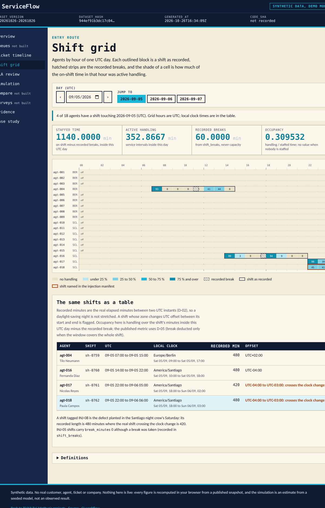
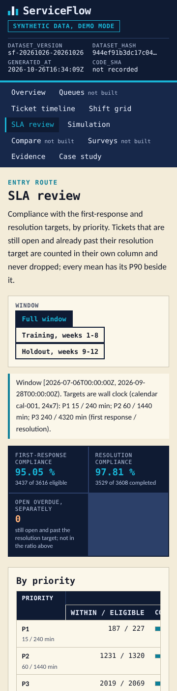

[ Work ]Dashboard · Operations analytics · FastAPI · ReactCase 226 / 236
Which Staffing or Routing Change Meets Support Targets Under Uncertain Workload?
ServiceFlow: a support queue reconstructed from its event log. FIFO within priority, waits measured from the original arrival, breaks deducted from staffed time, SLA compliance with open overdue tickets counted separately and P90 always beside the mean, and a seeded queue simulator that reproduces the known answer (three tickets at minute 0 served for 10 minutes each wait 0, 10 and 20, mean 10, last completion at 30) before any random arrival is drawn. Synthetic data; project 04 of the Business Data Lab.
What needed answering
The weekly service review argues about one number. Average wait looks fine while a tenth of the technical P1 tickets sit for ten hours; a transfer quietly restarts the clock; a bot acknowledgement counts as a first response; an agent on a break is counted as available; and the staffing proposal is a simulation whose warm-up was left in the average. Nobody can say whether adding one agent on Monday morning would have met the target, because the estimate and the history are measured differently.
ServiceFlow fixes the measurement first: one event log with FIFO within priority, waits and resolution from the original arrival, breaks deducted from staffed time, the utilisation and the waiting tail shown as two numbers, arrival distributions estimated from the training weeks only and validated on the holdout, and simulation estimates kept visibly apart from anything realised.
The build
Two implementations of one contract, checked against a hand calculation and each other.
- The contract: an append-only ticket event log (created, bot and human replies, assignment, pause and resume, transfer, reopen, abandonment, resolution) replayed into one state per ticket; FIFO within priority; wait, first response and resolution measured from the original arrival, never from a transfer; handling clipped to the window; breaks deducted from staffed time; SLA clocks on the wall-clock calendar with open overdue tickets counted separately; a queue simulator with exponential service, a declared warm-up and a horizon, run on common random numbers so that policies are compared on the same demand path; estimates labelled as estimates.
- A known-answer fixture written first: one agent, three tickets at minute 0, 10-minute service, so starts at 0, 10 and 20, waits of 0, 10 and 20, a mean wait of 10.0000 and the last completion at 30.0000, plus a rejected-record variant and an empty-population variant. A standard-library script reproduces all 130 figures and counts from the records and checks the 7 fixture hashes.
- The Python domain, PostgreSQL schema and FastAPI commands: load an event batch with duplicates and out-of-order arrivals handled and every rejection kept with its reason; assign, pause, resume, transfer and resolve under row locks in a fixed order with deadlocks retried then refused; compute every metric over any window and grouping; run a seeded simulation and compare two policies with a paired interval. 377 tests run against PostgreSQL 16 on a GitHub-hosted runner, and an independent SQL recomputation agrees with the domain on all 28 metrics over the full, training and holdout windows.
- The static site: the same contract in TypeScript with integer seconds and exact rationals, including the seeded generator reimplemented so that the browser reproduces the Python simulator event for event; a queue timeline, a shift grid across a daylight-saving weekend, an SLA review, a simulation studio and an evidence page that runs the golden checks live; 303 golden checks, 54 review-finding checks and 70 Playwright tests at four widths and 200% zoom.
- A deterministic synthetic world: three queues, 18 agents in Berlin and Santiago with shifts declared in local time, 3,826 tickets over twelve weeks with Poisson arrivals by hour of week, a +20% holdout, and nine injected defects (a bot acknowledgement labelled human, a reopen recorded as a new customer, an unqualified assignment, two simultaneous services for one agent, a break counted as available, a transfer that resets the arrival, a warm-up left in a simulation, a shift across the clock change, survey non-response skew) published in a manifest with how each must be handled.
Step by step
- Step 01
The known answer before any randomness
One agent, three tickets arriving at minute 0, deterministic 10-minute service. FIFO gives starts at 0, 10 and 20, waits of 0, 10 and 20, a mean wait of 10 minutes and the last completion at minute 30. A standard-library script reproduces the figures from the records and the simulator must return exactly these events before it is allowed a seed.
- Step 02
Utilisation and the tail are two numbers
Occupancy says how busy the agents were; it says nothing about the tenth of tickets that waited longest. Every screen that shows a mean shows the P90 beside it, and the SLA review counts tickets that are still open and already overdue separately from the compliance rate of the resolved ones.
- Step 03
Train on eight weeks, validate on four
Arrival intensities by hour of week are estimated from weeks 1 to 8 only. Weeks 9 to 12 carry a designed +20% load that the generator discloses; the simulator's forecast is compared against them rather than against the weeks it learned from.
- Step 04
Two modes, disclosed
Mode A is the backend on a GitHub-hosted runner with a transient PostgreSQL. Mode B is the public site over a published snapshot; the simulation studio runs in the browser with the published seed and says that nothing is staffed or routed by it.
Results
The shift grid on the synthetic snapshot (Saturday 2026-09-05 UTC, the Santiago clock-change night: four agents on shift, 1,140 staffed minutes after breaks, occupancy 0.31; the night crew's recorded 480-minute shift against the real 420 is the injected defect INJ-08, outlined):

The SLA review on a phone:

What the data supports. Over the twelve weeks the queues took 3,817 accepted tickets (9 more were rejected with their dependants, 70 records in all, every one named in the injection manifest) and completed 3,608. Mean wait to first service is 25.5 minutes (the 291 waits after a transfer are measured separately, not added), mean first response 28.0 minutes with a P90 of 44.2, mean resolution 164.6 minutes; first-response compliance is 95.0% overall but 82.4% for P1 (187 of the 227 P1 tickets that received a human reply were answered within 15 minutes; 9 more P1 tickets were abandoned before any reply and are outside that denominator), resolution compliance 97.8% measured from the original arrival (so a reopened ticket is charged the time it lay closed; 54 of the 79 misses are reopens), no ticket open and overdue at the cutoff; agent occupancy is 0.42 over 447,450 staffed minutes; 11.8% of chat and phone tickets were abandoned (201 before any service, 8 after a transfer while mid-service); surveys were invited on 59.5% of completions, answered by 34.9%, with a CSAT of 0.864 among those who answered. The simulation studio reproduces the known answer in the browser and then re-runs the three published scenarios on the published seed: the baseline (five agents, 3.12 arrivals an hour) has a mean wait of 14.6 minutes and a P90 of 31.0; one more agent brings them to 3.9 and 18.7; the holdout intensity on five agents pushes them to 33.6 and 80.9. Each of those is a single seeded replication of about 30 tickets, so the page now also runs 50 replications per scenario in the browser and shows the means with 95% intervals: baseline 18.8 ± 8.2 minutes, one more agent 8.0 ± 5.2, holdout intensity 30.6 ± 8.3, and the paired difference of adding an agent, on the same demand path, −10.9 ± 3.4 minutes; the holdout scenario does not share the demand path by design, and the page says that the model treats the technical agents as dedicated servers although three of the five on that first Monday morning also hold billing or onboarding skills, four of the five from August (28.9% of their handling in the bind went to other queues). These are estimates from a seeded model and the page says so; they are not realised staffing benefits. The generator's designed relationships (a long technical P1 tail, the Monday-morning bind, faster handling above proficiency 4, the +20% holdout) are published in its manifest; nothing here is a finding about any real support team.
Found by review, then fixed. An independent reviewer, briefed to disprove the page, confirmed that the SQL reference reported the whole window as staffed time when no shift overlapped it (the three published windows were unaffected); that a ticket rejected for overlapping another agent interval stayed rejected after the ticket it clashed with was itself rejected; that an agent could resume work off shift or inside a recorded break, and that the loader did not enforce shift availability; that an analyst could change an existing ticket's state through the event loader; that the request's dataset version was accepted but never checked; and that an earlier version of this page claimed the SupplyScope reference count (184) for this project's script (137 checks; corrected). All of it is fixed on the branch with regression tests in Python, SQL and TypeScript, and the reviewer's twenty hand-calculated cases now agree across the hand values and all three implementations except where the hand value assumed an off-shift service that the loader now refuses. The +20% holdout is a chosen realisation of a seeded series (attempt 7; the first seven ranged from +12.7 to +30.5%), now recorded in the manifest and labelled on the site.
Not built yet: the shift-scenario builder (C07) and the recommendation export (C10) return 501; the queue, compare and survey screens are stubs that say so.
Next
- Build the shift-scenario builder (C07) and the recommendation export (C10), which return 501 today, and the queue, compare and survey screens.
- Decide the break rule for a window that cuts a shift (D-05 keeps the full overlap today) now that breaks are declared intervals.
- Projects 05 to 10 of the lab follow the same gates.